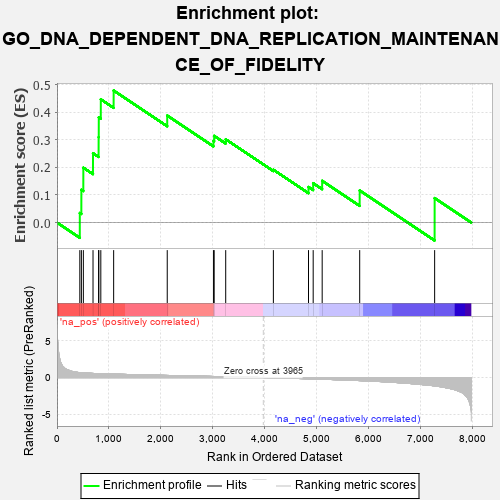
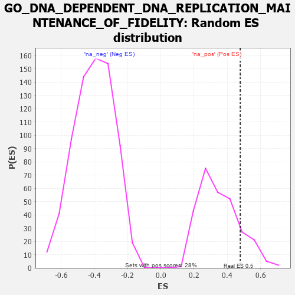

| | | Dataset | 7d |
| Phenotype | NoPhenotypeAvailable |
| Upregulated in class | na_pos |
| GeneSet | GO_DNA_DEPENDENT_DNA_REPLICATION_MAINTENANCE_OF_FIDELITY |
| Enrichment Score (ES) | 0.47829533 |
| Normalized Enrichment Score (NES) | 1.3623791 |
| Nominal p-value | 0.13780919 |
| FDR q-value | 0.37984154 |
| FWER p-Value | 1.0 |
Table: GSEA Results Summary

Fig 1: Enrichment plot: GO_DNA_DEPENDENT_DNA_REPLICATION_MAINTENANCE_OF_FIDELITY
Profile of the Running ES Score & Positions of GeneSet Members on the Rank Ordered List
| PROBE | GENE SYMBOL | GENE_TITLE | RANK IN GENE LIST | RANK METRIC SCORE | RUNNING ES | CORE ENRICHMENT | | 1 | CENPS | | | 439 | 0.666 | 0.0347 | Yes |
| 2 | WRN | | | 469 | 0.649 | 0.1187 | Yes |
| 3 | THOC1 | | | 507 | 0.627 | 0.1987 | Yes |
| 4 | MRE11 | | | 693 | 0.560 | 0.2511 | Yes |
| 5 | EXD2 | | | 801 | 0.532 | 0.3094 | Yes |
| 6 | BLM | | | 804 | 0.531 | 0.3809 | Yes |
| 7 | RFWD3 | | | 843 | 0.521 | 0.4464 | Yes |
| 8 | RAD51 | | | 1090 | 0.466 | 0.4783 | Yes |
| 9 | TONSL | | | 2121 | 0.288 | 0.3876 | No |
| 10 | RTEL1 | | | 3010 | 0.148 | 0.2960 | No |
| 11 | BRCA2 | | | 3024 | 0.146 | 0.3140 | No |
| 12 | EME1 | | | 3246 | 0.114 | 0.3016 | No |
| 13 | MCM9 | | | 4163 | -0.036 | 0.1913 | No |
| 14 | TIPIN | | | 4839 | -0.166 | 0.1289 | No |
| 15 | ATRX | | | 4929 | -0.184 | 0.1426 | No |
| 16 | DDX11 | | | 5102 | -0.225 | 0.1512 | No |
| 17 | FANCM | | | 5824 | -0.413 | 0.1163 | No |
| 18 | CDK9 | | | 7266 | -1.138 | 0.0886 | No |
Table: GSEA details [plain text format]

Fig 2: GO_DNA_DEPENDENT_DNA_REPLICATION_MAINTENANCE_OF_FIDELITY: Random ES distribution
Gene set null distribution of ES for GO_DNA_DEPENDENT_DNA_REPLICATION_MAINTENANCE_OF_FIDELITY